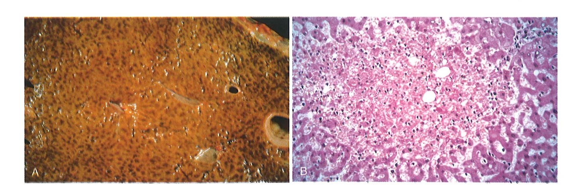
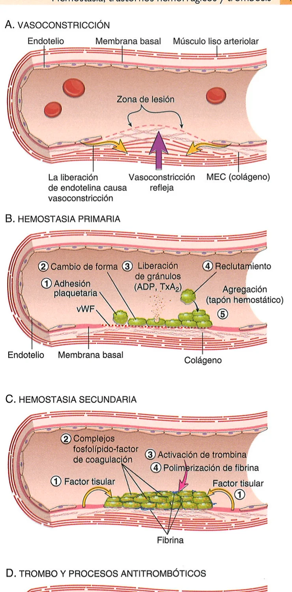
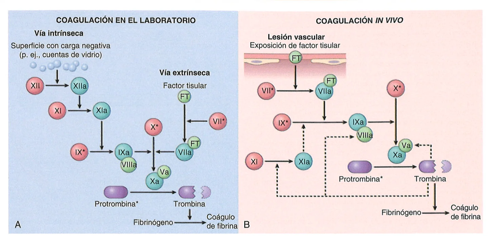
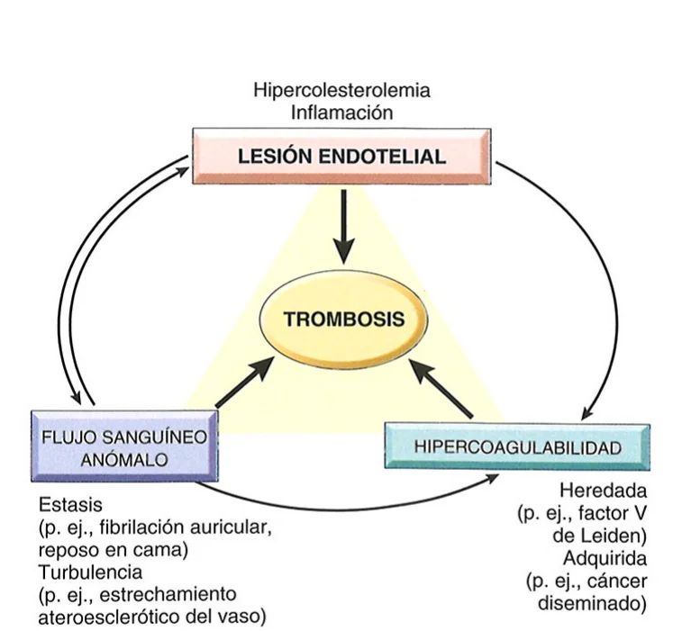
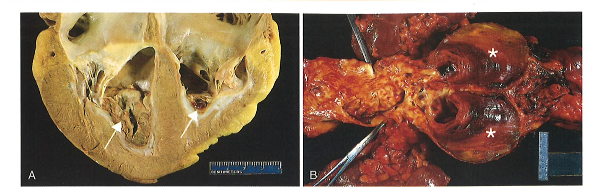
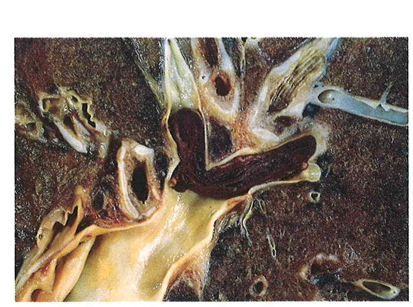
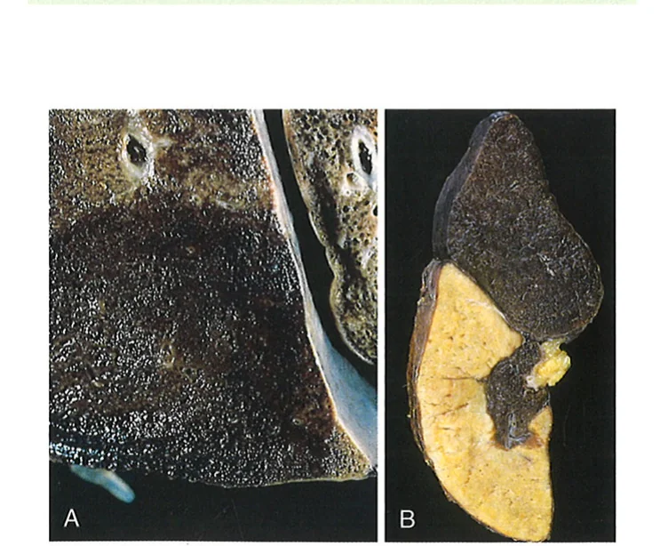
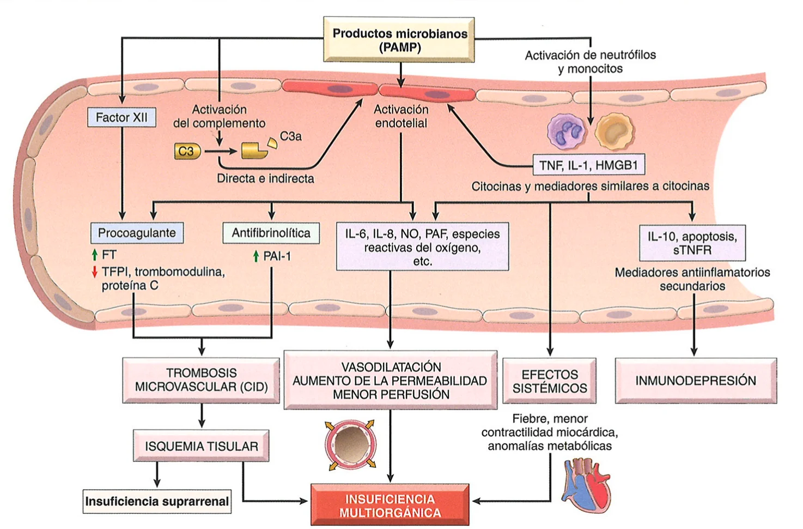

Qué cubre esta guía
Este resumen del Certamen 1 se redactó antes de adoptar la cita por página; se publica sin reescribirlo. El Manual del Certamen 1 incluye el índice tema-clase-Robbins y las fuentes.
Lo esencial en 60 segundos
- El edema resulta de un desequilibrio entre salida capilar de líquido y drenaje linfático: presión hidrostática alta, coloidosmótica baja, retención de sodio u obstrucción linfática.
- Hiperemia es activa (arteriolar, roja) y congestión pasiva (venosa, cianótica); la crónica deja células de insuficiencia cardiaca e hígado en nuez moscada.
- Hemostasia en 4 pasos: vasoconstricción, tapón plaquetario (vWF, GpIb, GpIIb/IIIa), depósito de fibrina por trombina y limitación del coágulo (t-PA, trombomodulina).
- Triada de Virchow: lesión endotelial, estasis o turbulencia e hipercoagulabilidad (Leiden, G20210A, TIH, SAA); los trombos se propagan, embolizan, se disuelven o se organizan.
- La EP procede de TVP en más del 95% de los casos; más del 60% de obstrucción pulmonar causa muerte súbita o cor pulmonale agudo.
- El infarto es necrosis isquémica, rojo o blanco según la vascularización; el shock es hipoperfusión sistémica con fases no progresiva, progresiva e irreversible.
Ideas clave
- La tromboembolia está en la base de las tres principales causas de morbilidad y muerte en los países de renta alta: infarto de miocardio, embolia pulmonar y accidente cerebrovascular (ictus).
- El edema aparece cuando la salida de líquido de los capilares (por aumento de la presión hidrostática o descenso de la presión coloidosmótica) supera la capacidad de drenaje del sistema linfático.
- La hemostasia tiene tres pasos: vasoconstricción transitoria, tapón plaquetario (hemostasia primaria) y depósito de fibrina (hemostasia secundaria), con mecanismos contrarreguladores que limitan el coágulo a la zona de lesión.
- El endotelio es el regulador central de la hemostasia: es antitrombótico cuando está intacto y se vuelve procoagulante cuando se lesiona o activa.
- La formación de trombos depende de la triada de Virchow: lesión endotelial, alteración del flujo sanguíneo e hipercoagulabilidad.
- Los trombos tienen cuatro destinos: propagación, embolización, disolución y organización con recanalización.
- Un infarto es un área de necrosis isquémica por oclusión arterial (frecuente) o del drenaje venoso (raro); es rojo (hemorrágico) o blanco (anémico) según la vascularización del tejido.
- El shock es un estado de hipoperfusión tisular sistémica con hipoxia celular; los tipos principales son cardiógeno, hipovolémico y distributivo (séptico, neurógeno y anafiláctico), y evoluciona en tres fases: no progresiva, progresiva e irreversible.
Edema y derrames
El edema es la acumulación de líquido en los tejidos por un desplazamiento neto de agua a los espacios extravasculares. El líquido acumulado en las cavidades corporales se denomina derrame.
En condiciones normales, la presión hidrostática vascular (que saca agua y sales del capilar) y la presión coloidosmótica del plasma (que las recupera) se equilibran casi por completo. Hay un pequeño movimiento neto hacia el intersticio, que drenan los vasos linfáticos: el líquido llega al conducto torácico y regresa al torrente sanguíneo por la vena subclavia izquierda. Si la salida neta supera el drenaje linfático, aparece el edema.
Líquidos del edema: trasudado y exudado
| Tipo | Contenido | Causa | Ejemplos |
|---|---|---|---|
| Exudado | Rico en proteínas, a menudo turbio por leucocitos | Aumento de la permeabilidad vascular por mediadores inflamatorios | Edemas y derrames inflamatorios |
| Trasudado | Escasas proteínas, transparente y de color pajizo | Trastornos no inflamatorios | Insuficiencia cardiaca, hepática, nefropatías, malnutrición |
Excepción: los derrames peritoneales por bloqueo linfático (derrame quiloso) son lechosos por la presencia de lípidos absorbidos del intestino.
Mecanismos del edema
- Aumento de la presión hidrostática: causado por trastornos que alteran el retorno venoso. Si es localizado (p. ej., trombosis venosa profunda de una extremidad), el edema queda limitado a la parte afectada; si se eleva la presión venosa sistémica (p. ej., insuficiencia cardiaca congestiva), los edemas son diseminados.
- Reducción de la presión osmótica del plasma: la albúmina es casi la mitad de las proteínas plasmáticas. Su descenso se debe a síntesis inadecuada (cirrosis terminal, malnutrición proteínica) o a pérdidas aumentadas (síndrome nefrótico, con albúmina en la orina por permeabilidad glomerular anómala). La hipoproteinemia produce, en etapas sucesivas, edema, menor volumen intravascular, hipoperfusión renal e hiperaldosteronismo secundario; la retención renal de agua y sal no corrige el problema primario y agrava el edema.
- Retención de sodio y agua: aumenta la presión hidrostática (expansión del volumen intravascular) y disminuye la coloidosmótica (dilución). Ocurre en trastornos renales y cardiovasculares con hipoperfusión renal, vía activación del sistema renina-angiotensina-aldosterona. En la insuficiencia cardiaca inicial es adaptativo (mejora el gasto cardiaco); al empeorar esta, el líquido retenido solo eleva la presión hidrostática y provoca edemas y derrames.
- Obstrucción linfática: por traumatismos, fibrosis, tumores infiltrantes o algunos microorganismos infecciosos. Ejemplos: elefantiasis (la filariasis induce fibrosis obstructiva de vasos y ganglios linfáticos, con edema masivo de genitales externos y extremidades inferiores) y linfedema de la extremidad superior tras cirugía o radiación de mama y ganglios axilares en el cáncer de mama.
Morfología
- Microscopía: aclaración con separación de la matriz extracelular y leve tumefacción celular.
- Tejidos más afectados: subcutáneo, pulmones y encéfalo.
- Edema ortostático: distribución influida por la gravedad (piernas al estar de pie, sacro al tumbarse).
- Edema con fóvea: la presión del dedo desplaza el líquido intersticial y deja una cavidad.
- La nefropatía grave causa edema periorbitario inicial (tejido conjuntivo laxo de los párpados).
- Edema pulmonar: pulmones con 2 a 3 veces su peso normal; al corte, líquido espumoso y sanguinolento (mezcla de aire, edema y eritrocitos extravasados).
- Edema cerebral: localizado o generalizado; encéfalo tumefacto con surcos estrechados y circunvoluciones distendidas comprimidas contra el cráneo.
- Derrames trasudados: hidrotórax (pleural), hidropericardio (pericárdico), hidroperitoneo o ascitis (peritoneal).
Características clínicas
- El edema subcutáneo apunta a enfermedad cardiaca o renal subyacente; si es intenso, altera la cicatrización de heridas y la erradicación de infecciones.
- Edema pulmonar: frecuente en insuficiencia del ventrículo izquierdo (también insuficiencia renal, síndrome de dificultad respiratoria aguda e inflamaciones o infecciones pulmonares). dificulta el intercambio gaseoso (hipoxemia) y crea un medio favorable para la infección bacteriana. Los derrames pleurales asociados comprimen el parénquima y agravan la situación.
- Ascitis: más frecuentemente por hipertensión portal; susceptible de colonización bacteriana con infecciones graves.
- Edema cerebral: si es intenso, puede herniar el encéfalo a través del agujero occipital o comprimir la irrigación del tronco encefálico, dañando los centros bulbares y causando la muerte.
Hiperemia y congestión
Ambas implican aumento del volumen sanguíneo en un tejido, por mecanismos distintos.
| Característica | Hiperemia | Congestión |
|---|---|---|
| Proceso | Activo | Pasivo |
| Mecanismo | Dilatación arteriolar | Menor flujo de salida venosa |
| Flujo sanguíneo | Aumentado | Disminuido |
| Color | Rojo (eritema) | Azulado-rojizo (cianosis) |
| Motivo del color | Aporte de sangre oxigenada | Hemoglobina desoxigenada |
| Ejemplos | Inflamación, músculo en ejercicio | Insuficiencia cardiaca (sistémica), obstrucción venosa (local) |
- La congestión pasiva crónica causa lesión isquémica y cicatrices por la hipoxia sostenida; la rotura de capilares produce focos hemorrágicos, y el catabolismo de los eritrocitos extravasados deja macrófagos cargados de hemosiderina.
- Por el aumento de la presión hidrostática, la congestión suele seguirse de edema.
Morfología
- Congestión pulmonar aguda: capilares alveolares dilatados, edema septal alveolar y hemorragias intraalveolares focales.
- Congestión pulmonar crónica (p. ej., insuficiencia cardiaca congestiva): paredes engrosadas y fibróticas; alvéolos con macrófagos cargados de hemosiderina, llamados células de la insuficiencia cardiaca.
- Congestión hepática aguda: vena central y sinusoides distendidos. El área centrolobulillar (extremo distal de la irrigación hepática) sufre necrosis isquémica; los hepatocitos periportales, mejor oxigenados, desarrollan degeneración grasa.
- Congestión hepática pasiva crónica: regiones centrolobulillares rojizas y ligeramente hundidas por muerte celular, destacando sobre un fondo marrón no congestionado (hígado en nuez moscada). Histología: hemorragia centrolobulillar, macrófagos con hemosiderina y pérdida y necrosis de hepatocitos de grado variable.


Hemostasia, trastornos hemorrágicos y trombosis
La hemostasia es el proceso por el cual se forman coágulos sanguíneos en las zonas de lesión vascular. Sus alteraciones se dividen en:
- Trastornos hemorrágicos: sangrado excesivo, por mecanismos hemostáticos amortiguados o insuficientes.
- Trastornos trombóticos: formación de coágulos (trombos) en vasos indemnes o en las cavidades cardiacas.
Esta división no siempre se cumple: en la coagulación intravascular diseminada (CID) la activación generalizada de la coagulación produce, de forma paradójica, hemorragias por consumo de factores de la coagulación.
Hemostasia normal
Secuencia en la zona de lesión vascular:
- Vasoconstricción arteriolar: inmediata; reduce el flujo sanguíneo de la zona. Es mediada por reflejos neurógenos y potenciada por factores locales, como la endotelina (potente vasoconstrictor derivado del endotelio). Transitoria.
- Hemostasia primaria (tapón plaquetario): la rotura del endotelio expone el factor de von Willebrand (vWF) y el colágeno subendoteliales, que promueven la adhesión y activación de las plaquetas. Estas cambian de forma (de discos redondeados a láminas aplanadas con espículas, con gran aumento de superficie) y liberan gránulos; en pocos minutos, los productos secretados reclutan más plaquetas y se forma el tapón hemostático primario.
- Hemostasia secundaria (depósito de fibrina): la lesión expone el factor tisular, glucoproteína procoagulante de membrana expresada por células subendoteliales (músculo liso, fibroblastos). Este une y activa el factor VII, desencadenando una cascada que culmina en la generación de trombina. La trombina escinde el fibrinógeno en fibrina insoluble y activa también intensamente las plaquetas, con lo que consolida el tapón inicial en un coágulo definitivo.
- Estabilización y reabsorción del coágulo: se ponen en marcha mecanismos contrarreguladores (p. ej., el activador del plasminógeno tisular [t-PA] producido por las células endoteliales, y la trombomodulina) que limitan la coagulación a la zona de lesión y terminan por provocar la reabsorción del coágulo y la reparación del tejido.


Plaquetas
Fragmentos celulares sin núcleo, en forma de disco, que se desprenden de los megacariocitos de la médula ósea. Forman el tapón primario y aportan una superficie que une y concentra los factores de la coagulación activados. Dependen de receptores de glucoproteínas, un citoesqueleto contráctil y dos tipos de gránulos:
- Gránulos alfa: contienen fibrinógeno, factor V, vWF, fibronectina, factor plaquetario 4 (PF4), PDGF y TGF-beta. Tienen en su membrana la molécula de adhesión selectina P.
- Gránulos densos: contienen ADP, ATP, calcio ionizado, serotonina y adrenalina.
Pasos de la formación del tapón plaquetario:
- Adhesión: la plaqueta contacta con el vWF y el colágeno subendoteliales. La adhesión al vWF se realiza por el receptor GpIb; la adherencia al colágeno expuesto, por el receptor GpIa/IIa. Su relevancia se confirma con las carencias genéticas: déficit de vWF (enfermedad de von Willebrand) y déficit de GpIb (síndrome de Bernard-Soulier), ambos con trastornos hemorrágicos.
- Cambio de forma y secreción (activación plaquetaria): las plaquetas pasan de discos lisos a "erizos de mar" espiculares con gran incremento de superficie. Aparecen alteraciones conformacionales en la GpIIb/IIIa, que aumentan su afinidad por el fibrinógeno, y translocación de fosfolípidos con carga negativa (especialmente fosfatidilserina) a la superficie; estos fosfolípidos se unen al calcio y sirven como superficies para el ensamblaje de los complejos de la coagulación.
- Agregación: el fibrinógeno (glicoproteína bivalente) une plaquetas activadas vecinas a través de los GpIIb/IIIa conformacionalmente alterados; su déficit hereditario causa la tromboastenia de Glanzmann. La oleada inicial es reversible, pero la trombina la estabiliza: aumenta la activación y agregación, y promueve una contracción plaquetaria irreversible (dependiente del citoesqueleto); convierte además el fibrinógeno en fibrina insoluble, cementando el tapón hemostático secundario definitivo.
Estímulos de la activación:
- La trombina activa las plaquetas por el receptor PAR-1 (receptor activado por proteasa).
- El ADP de los gránulos densos provoca nuevos ciclos de activación (reclutamiento).
- Las plaquetas activadas producen la prostaglandina tromboxano A2 (TxA2), potente inductor de la agregación.
Aplicación clínica: el ácido acetilsalicílico inhibe irreversiblemente la ciclooxigenasa plaquetaria, necesaria para la síntesis de TxA2; también hay inhibidores de los receptores PAR-1 y P2Y12. Se usan en la enfermedad arterial coronaria.
Cascada de la coagulación
Serie de reacciones enzimáticas amplificadoras que culminan en la formación de un coágulo de fibrina insoluble. En cada una participan una enzima (factor activado), un sustrato (proenzima inactiva) y un cofactor (acelerador); todos se ensamblan en la superficie fosfolípidica de las plaquetas activadas. El calcio mantiene unidos los componentes y se une a los residuos de ácido glutámico gamma-carboxilado de los factores II, VII, IX y X. La gama-carboxilación depende de la vitamina K y es antagonizada por la warfarina.
Vías de la coagulación:
| Concepto | Vía extrínseca | Vía intrínseca | In vivo |
|---|---|---|---|
| Iniciador | Factor tisular | Superficie con carga negativa (activación del factor XII) | Factor tisular |
| Prueba de laboratorio asociada | Tiempo de protrombina (TP) | Tiempo de tromboplastina parcial (TTP) | no se recapitulan |
| Factores evaluados | VII, X, V, II, fibrinógeno | XII, XI, IX, VIII, X, V, II, fibrinógeno | cascada común |
Pruebas de laboratorio:
- Tiempo de protrombina (TP): evalúa la función de las proteínas de la vía extrínseca (factores VII, X, V, II [protrombina] y fibrinógeno); se añade factor tisular, fosfolípidos y calcio al plasma, y se mide el tiempo hasta la formación de un coágulo de fibrina.
- Tiempo de tromboplastina parcial (TTP): evalúa la vía intrínseca (factores XII, XI, IX, VIII, X, V, II y fibrinógeno); se inicia con partículas con carga negativa (p. ej., vidrio esmerilado o cuentas de vidrio) que activan el factor XII (factor de Hageman), junto con fosfolípidos y calcio.
- Aunque el TP y el TTP son muy útiles para evaluar a los pacientes, no recapitulan la coagulación in vivo. Deficits de factores V, VII, VIII, IX y X: hemorragia moderada o grave; carencia de protrombina: probablemente incompatible con la vida; déficit de XI: hemorragia leve; carencia de XII: sin hemorragia, sino susceptibilidad a las trombosis (se apoya en su implicación en la vía de la bradicinina y la fibrinólisis).
- En organismos vivos, el complejo factor VIIa/factor tisular es el activador más importante del factor IX, y el complejo factor IXa/factor VIIIa el más importante del factor X; la trombina amplifica la coagulación activando además los factores XI, V y VIII (retroalimentación).


Funciones de la trombina, el factor más importante de la coagulación y nexo entre hemostasia, inflamación y reparación:
- Convierte el fibrinógeno soluble en monómeros de fibrina que polimerizan en fibrillas insolubles.
- Amplifica la coagulación: activa el factor XI y los cofactores V y VIII.
- Estabiliza el tapón hemostático secundario activando el factor XIII, que forma puentes cruzados covalentes en la fibrina.
- Activa y agrega potentemente las plaquetas por medio de los receptores activados por proteasa (PAR).
- Efectos proinflamatorios en células endoteliales, leucocitos y otras (contribuyen a la reparación tisular y la angiogenia).
- Efecto anticoagulante sobre endotelio normal: en contacto con un endotelio indemne se une a la trombomodulina, pierde su capacidad de activar factores de coagulación y plaquetas, y en su lugar activa la proteína C.
Limitación de la coagulación a la zona de lesión:
- simple dilución de los factores activados (el hígado los retira rápidamente).
- Necesidad de fosfolípidos con carga negativa, aportados fundamentalmente por plaquetas activadas en contacto con la matriz subendotelial.
- Actividad de los factores endoteliales anticoagulantes (t-PA, trombomodulina, TFPI y trombomodulina de otros tipos).
Dos casos tipifican este límite: en el trombocitopenia severa el corazón no puede fibrilarse (coagulación intravascular diseminada [CID]), y en la hipercoagulabilidad las células endoteliales activadas sobreexpresan factores protrombóticos.
Fibrinólisis
La activación de la coagulación desencadena también la fibrinólisis, que limita el tamaño del coágulo y contribuye a su disolución. La plasmina degrada la fibrina e interfiere en su polimerización; procede del catabolismo enzimático del plasminógeno, en una vía dependiente del factor XII (por eso quizás el déficit de XII se asocia con trombosis) o por activadores del plasminógeno. El activador más importante es el t-PA, sintetizado fundamentalmente en el endotelio y de máxima actividad al unirse a la fibrina; por eso su actividad fibrinolítica se limita a las zonas de trombosis reciente y es útil terapéuticamente. La plasmina libre es controlada por la alfa2-antiplasmina. Unas concentraciones altas de productos de degradación de la fibrina, en especial dímeros D, son un marcador clínico útil de varios estados trombóticos.
Endotelio en la hemostasia
El equilibrio entre las actividades antitrombóticas y protrombóticas del endotelio determina la formación, propagación o disolución del coágulo.
Actividades antitrombóticas del endotelio normal:
- Contra las plaquetas: barrera que impide el contacto con el colágeno y el vWF subendoteliales; liberación de varias sustancias que inhiben la activación y agregación plaquetarias: prostaciclina (PGI2), óxido nítrico (NO) y adenosina difosfatasa (degrada el ADP).
- Anticoagulantes: barrera entre las plaquetas, los factores de coagulación y el factor tisular subendotelial. Además:
- Trombomodulina y receptor endotelial de proteína C forman un complejo sobre el endotelio; la trombina ligada a la trombomodulina activa la proteína C, una proteasa dependiente de vitamina K que requiere la proteína S como cofactor; el complejo proteína C activada/proteína S es un potente inhibidor de los cofactores Va y VIIIa.
- Moléculas similares a la heparina que activan la antitrombina III, la cual inactiva la trombina y los factores IXa, Xa, XIa y XIIa. La utilidad clínica de la heparina se basa en su capacidad de estimular la actividad de la antitrombina III.
- El inhibidor de la vía del factor tisular (TFPI) se une e inhibe los complejos factor tisular/factor VIIa (requiere la proteína S como cofactor).
- Fibrinolíticos: síntesis de t-PA.
Propiedades procoagulantes del endotelio lesionado o activado: exposición del colágeno/vWF subendotelial, adhesión de plaquetas y expresión de la secuencia de la coagulación extrínseca (factor tisular unido a la membrana).
Trastornos hemorrágicos
Los defectos afectan a la pared de los vasos, las plaquetas o los factores de la coagulación; los tres deben funcionar correctamente. Varían desde hemorragias masivas por rotura de grandes vasos (disección aórtica, aneurisma de la aorta abdominal, infarto de miocardio con rotura de aorta o corazón, con frecuencia mortales) hasta defectos leves que solo se manifiestan bajo sobrecarga hemostática (cirugía, parto, intervenciones dentales, menstruación, traumatismos). Causas frecuentes de tendencia hemorrágica leve: defectos hereditarios del vWF, ácido acetilsalicílico y uremia (altera la función plaquetaria por mecanismos desconocidos). Entre ambos extremos se hallan los déficits de factores de la coagulación (hemofilias), generalmente hereditarios y graves sin tratamiento. Trastorno paradigmático que reúne trombosis y hemorragia: la coagulación intravascular diseminada (coagulopatía de consumo).
Patrones de presentación del sangrado
| Alteración | Manifestación | Tamaño | Ejemplos |
|---|---|---|---|
| Hemostasia primaria (defectos de plaquetas o enfermedad de vWF) | Petequias y púrpura en piel y mucosas; epistaxis, hemorragia digestiva y menorragia | Petequias: 1 a 2 mm; púrpura: algo mayor (más de 3 mm) | Trombocitopenia |
| Hemostasia secundaria (defectos de factores) | Hemorragias de tejidos blandos y hemartros tras traumatismos leves | Hemorragias musculares y articulares profundas | Hemofilia |
| Afeción generalizada de vasos pequeños | Púrpura palpable y equimosis (1 a 2 cm) | Hematoma: masa palpable de sangre | Vasculitis, amiloidosis, escorbuto (fragilidad de pequeños vasos) |
La complicación temible de recuentos plaquetarios muy bajos (trombocitopenia) y de los déficits graves de factores de la coagulación es la hemorragia intracerebral, en ocasiones mortal. Se desconoce por qué las alteraciones graves de la hemostasia secundaria producen ese patrón particular de sangrado.
Relevancia clínica de la hemorragia
- La relevancia depende del volumen, la velocidad y la localización.
- Se exige que en adultos sanos la pérdida rápida de hasta el 20% del volumen sanguíneo apenas tenga efecto; pérdidas mayores pueden causar shock hemorrágico (hipovolémico).
- Hemorragias banales en tejido subcutáneo matan si afectan al encéfalo (por aumento de la presión intracraneal, que compromete la irrigación sanguínea, o por herniación del tronco encefálico).
- Las pérdidas externas crónicas o recidivantes (p. ej., úlcera péptica, sangrado menstrual) causan pérdida de hierro y pueden provocar anemia ferropénica. En cambio, cuando los eritrocitos quedan retenidos (hemorragia en cavidades o tejidos), el hierro se recupera y se recicla.
Trombosis
La trombosis es la formación de coágulos (trombos) en vasos sanguíneos indemnes o en las cavidades cardiacas. Las anomalías principales que la causan son las de la triada de Virchow:
- Lesión endotelial
- Estasis o flujo sanguíneo turbulento
- Hipercoagulabilidad de la sangre
La integridad del endotelio es el factor más importante. La lesión del endotelio puede promover la trombosis alterando el flujo local y afectando a la coagulabilidad; el flujo anómalo (estasis o turbulencia), a su vez, puede causar lesión endotelial. Estos factores actúan de forma independiente o combinada.


Lesión endotelial
- Subyace casi inevitablemente a la formación de trombos en el corazón y la circulación arterial, donde la alta velocidad del flujo impide la coagulación clásica; por eso los trombos cardiacos y arteriales son muy ricos en plaquetas. La activación plaquetaria es un requisito previo para la trombosis arterial, y de ahí el uso de ácido acetilsalicílico e inhibidores de la función plaquetaria en la enfermedad arterial coronaria y el infarto agudo de miocardio.
- Además de las lesiones graves (exposición de vWF y factor tisular), la activación o disfunción endotelial cambia la expresión génica del endotelio hacia un patrón protrombótico. Sus causas: lesiones físicas, organismos infecciosos, flujo sanguíneo anómalo, mediadores de la inflamación, hipercolesterolemia, homocisteinemia y toxinas del humo del tabaco.
- Cambios protrombóticos del endotelio activado:
- Cambios procoagulantes: regulación a la baja de la trombomodulina (modulador clave de la actividad de la trombina, lo que potencia sus acciones procoagulantes y proinflamatorias) y de otros anticoagulantes como la proteína C y el TFPI.
- Efectos antifibrinolíticos: secreción de inhibidores del activador del plasminógeno (PAI), que limitan la fibrinólisis, y regulación a la baja del t-PA.
Alteraciones del flujo sanguíneo normal
- El flujo normal es laminar: las plaquetas (y otros elementos celulares) fluyen por el centro de la luz, separadas del endotelio por una capa de plasma que se mueve más despacio.
- La turbulencia contribuye a las trombosis arteriales y cardiacas (causa disfunción o lesión endotelial y forma contracorrientes con estasis local); la estasis es contribuyente principal de los trombos venosos.
- Efectos de ambos:
- Promueven la activación endotelial, con mayor actividad procoagulante y adhesión leucocitaria (cambios inducidos por el flujo en la expresión de moléculas de adhesión y factores proinflamatorios).
- Alteran el flujo laminar y ponen a las plaquetas en contacto con el endotelio.
- Impiden la dilución y retirada de los factores de coagulación activados.
- Situaciones clínicas: placas ateroescleróticas ulceradas (turbulencia y exposición subendotelial), aneurismas (estasis local), infarto de miocardio (áreas de miocardio no contráctil y a veces aneurisma cardiaco, con estasis y trombos murales), estenosis mitral reumática con dilatación de la aurícula izquierda (con fibrilación auricular, zona de estasis importante para trombos auriculares), hiperviscosidad (policitemia verdadera, con estasis en vasos pequeños) y drepanocitosis (eritrocitos deformados que impiden el flujo en vasos pequeños, con estasis).
Hipercoagulabilidad
- Tendencia anormalmente elevada de la sangre a coagularse, especialmente importante en las trombosis venosas. Se clasifica en primaria (genética) y secundaria (adquirida).
Primarias (genéticas):
| Trastorno | Frecuencia | Mecanismo |
|---|---|---|
| Factor V de Leiden | 2-15% de las personas de raza blanca; cerca del 60% en TVP de repetición | Factor V resistente a la escisión e inactivación por la proteína C, con pérdida de una vía contrarreguladora antitrombótica |
| Mutación G20210A de la protrombina | 1-2% de la población | Aumento de las concentraciones de protrombina |
| Aumento de los factores VII, IX, XI o fibrinógeno | Menos frecuente | Herencia poco clara |
| Déficit de antitrombina III, proteína C o proteína S | Infrecuente | Falta de un anticoagulante natural; trombosis venosas y tromboembolias de repetición desde la adolescencia o inicio de la edad adulta |
| Defectos de la fibrinólisis; homocistinuria homocigótica (déficit de cistationina beta-sintetasa) | Excepcional | Alteración de la lisis del coágulo y niveles muy altos de homocisteina |
Datos adicionales:
- Factor V de Leiden: mutación de un solo nucleótido (Arg -> Gln en el residuo 506), con herencia autosómica dominante. Los heterocigotos tienen un riesgo relativo 5 veces mayor de sufrir trombosis venosas; en homocigotos, el riesgo se multiplica por 50.
- Mutación de la protrombina: cambio de un solo nucleótido (G20210A) en la región 3' no traducida del gen, que causa un aumento de las concentraciones de protrombina y multiplica casi por 3 el riesgo de trombosis venosa.
- Homocisteinemia: por deficiencia hereditaria de la cistationina beta-sintetasa (niveles pronunciadamente altos) o por déficits adquiridos de vitaminas B6 y B12 y de ácido fólico. Sus efectos protrombóticos podrían deberse a enlaces entre metabolitos de la homocisteína y proteínas como el fibrinógeno.
- Los genotipos trombófilos encontrados con más frecuencia (heterocigotos para factor V de Leiden y para la variante G20210A de protrombina) solo conllevan un riesgo moderadamente elevado; la mayoría de las personas sin otros problemas de salud no presentan complicaciones trombóticas. Aun así, las mutaciones del factor V y de la protrombina son tan frecuentes que son relativamente comunes los homocigotos y los heterocigotos mixtos, que sí llevan un riesgo mayor, y en situaciones de riesgo agregado (gestación o reposo prolongado) se trombosis venosas con frecuencia. Como ejemplo, el estado de heterocigoto para el factor V de Leiden puede desencadenar TVP cuando se combina con inmovilidad forzosa, como los viajes largos en avión. Por eso se debe sospechar hipercoagulabilidad hereditaria en pacientes menores de 50 años que presenten trombosis, incluso si hay factores de riesgo adquiridos.
Secundarias (adquiridas): multifactoriales. Factores de riesgo de trombosis importantes: reposo en cama o inmovilización prolongados, infarto de miocardio, fibrilación auricular, lesión de tejidos (cirugía, fracturas, quemaduras), cáncer, prótesis de válvulas cardiacas, CID, trombocitopenia inducida por heparina y síndrome por anticuerpos antifosfolipidicos (SAA). Otros factores de riesgo: miocardiopatia, síndrome nefrótico, estados hiperestrogénicos (gestación y posparto), uso de anticonceptivos orales, drepanocitosis, tabaquismo y obesidad (mecanismos en parte desconocidos).
- Anticonceptivos orales y estados hiperestrogénicos: aumentan la síntesis hepática de factores de coagulación y disminuyen la de anticoagulantes.
- Cáncer diseminado: liberación de procoagulantes por el tumor.
- Edad avanzada: posiblemente por reducción de la producción endotelial de PGI2.
Dos estados trombófilos adquiridos de especial relevancia clínica:
- Trombocitopenia inducida por heparina (TIH)
- Síndrome por anticuerpos antifosfolípidicos (SAA)
Trombocitopenia inducida por heparina (TIH)
- Trastorno grave y potencialmente mortal tras la administración de heparina (sobre todo no fraccionada).
- La PF4 liberada de los gránulos plaquetarios se une a la heparina y sufre un cambio conformacional que produce un neoantígeno; contra él se forman anticuerpos IgG.
- El inmunocomplejo heparina-PF4-IgG se fija a los receptores Fc de la plaqueta y los entrecruza, activando y agregando las plaquetas. La activación libera más PF4, que retroalimenta el proceso (autoamplificación).
- Además, el estado protrombótico se refuerza por activación endotelial al unirse los anticuerpos de la TIH a proteínas similares a la PF4 en la superficie del endotelio.
- La unión de los anticuerpos a las plaquetas induce su eliminación por los macrófagos esplénicos (de ahí la trombocitopenia del nombre).
- Aunque la trombocitopenia es la manifestación más frecuente, la complicación más importante es la trombosis, en alrededor del 50% de los casos, tanto venosa como arterial: necrosis de la piel, gangrena de extremidades, accidente cerebrovascular e infarto de miocardio.
- Diagnóstico: detección de anticuerpos anti-PF4/heparina.
- Los preparados de heparina de bajo peso molecular inducen TIH con menor frecuencia; otras clases (inhibidores directos del factor X y de la trombina) reducen también este riesgo.
Síndrome por anticuerpos antifosfolípidicos (SAA)
- Trastorno autoinmunitario caracterizado por la presencia de uno o más autoanticuerpos antifosfolipidicos (aPL) y por trombosis arteriales o venosas o complicaciones gestacionales (abortos espontáneos de repetición, muerte fetal de origen desconocido, parto prematuro).
- SAA primario: sin otra enfermedad autoinmunitaria definida (cerca del 50% de los casos). En el secundario se asocia a una enfermedad autoinmunitaria, sobre todo el lupus eritematoso sistémico (antes llamado síndrome por anticoagulante lúpico).
- Manifestaciones clínicas: trombosis de repetición, abortos espontáneos de repetición, vegetaciones de las válvulas cardiacas y trombocitopenia. Según el lecho vascular: EP (tras trombosis venosa de las extremidades inferiores), hipertensión pulmonar (por émbolos pulmonares subclínicos recidivantes), cardiopatía valvular, accidente cerebrovascular, infarto intestinal o hipertensión vasculorrenal.
- Patogenia: los aPL se dirigen contra fosfolípidos aniónicos o proteínas de unión de membrana presentes en el plasma y en el endotelio, monocitos, plaquetas, trombina y trofoblasto. Las proteínas más frecuentes: cardiolipina y beta2-glucoproteína I. Los anticuerpos anti-beta2-glucoproteína I son patógenos (su transferencia a roedores induce trombosis) pues activan endotelio, monocitos y plaquetas; se han identificado, además, activación del complemento e inhibición de la fibrinólisis, ambas favorecedoras del estado protrombótico.
- Pérdida fetal: no se debe a la trombosis, sino a una interferencia anticuerpo-mediada en el crecimiento y la diferenciación del trofoblasto, que condiciona una placentación anómala (morbilidad gestacional definitoria del SAA).
- Aunque los aPL están claramente asociados a diátesis trombótica, también se han identificado en el 5-15% de las personas aparentemente normales; se postula que pudo ser necesario un segundo episodio (p. ej., infección, tabaco o embarazo) para desencadenar el SAA.
- Sorprende la paradoja: in vivo inducen un estado de hipercoagulabilidad, pero in vitro interfieren con los ensayos de coagulación dependientes de fosfolípidos y prolongan el TTP.
- Con frecuencia, los anticuerpos también producen un falso positivo en la prueba serológica de la sífilis (el antígeno de la prueba estándar incluye cardiolipina, que reacciona de forma cruzada con los fosfolípidos de Treponema pallidum).
- Diagnóstico: características clínicas más detección de aPL en suero. Tratamiento: varios tipos de anticoagulación.
Morfología de los trombos
Pueden desarrollarse en cualquier punto del aparato cardiovascular; su forma y tamaño dependen de la localización y de la causa.
- Los arterial y cardiacos suelen empezar en áreas de turbulencia o de lesión endotelial; los venosos en lugares de estasis.
- Están unidos focalmente a la pared (sobre todo en el punto de iniciación); a partir de este, los arteriales crecen en dirección retrógrada y los venosos en la del flujo; por ello, ambos se propagan hacia el corazón. La porción de propagación suele estar escasamente unida, y por eso es susceptible de desprenderse y embolizar.
- Líneas de Zahn: laminaciones visibles a simple vista y al microscopio, con depósitos claros de plaquetas y fibrina que alternan con capas más oscuras con numerosos eritrocitos. Indican que el trombo se formó en sangre que fluía; su presencia se distingue de los coágulos post mortem.
- Trombos murales: en las cavidades cardiacas o en la luz de la aorta. Alteraciones de la contracción del miocardio (arritmias, miocardiopatías dilatadas, infarto de miocardio) o lesiones endomiocárdicas (miocarditis, traumatismos por catéteres) promueven los trombos murales cardiacos; placas ateroescleróticas ulceradas y dilataciones aneurismáticas, los aórticos.
- Trombos arteriales: a menudo oclusivos. Zonas más frecuentes, en orden decreciente: coronarias, cerebrales y femorales. Constan de una red friable de plaquetas, fibrina, eritrocitos y leucocitos degenerados; habitualmente superpuestos a una placa ateroesclerótica rota (también causas: vasculitis, traumatismos).
- Trombos venosos (flebotrombosis): casi siempre oclusivos y forman un largo molde de la luz. Se forman en la circulación venosa, muy lenta, con más eritrocitos y relativamente pocas plaquetas; se denominan trombos rojos o de estasis. Firmes y unidos focalmente a la pared, con líneas de Zahn, características que ayudan a distinguirlos de los coágulos post mortem. Las venas de las extremidades inferiores son las más afectadas (el **90% de los casos); también extremidades superiores, plexo periprostático y venas ováricas y periuterinas; en circunstancias especiales, senos durales, vena porta o vena hepática.
- Coágulos post mortem: gelatinosos; porción inferior roja oscura (eritrocitos depositados por la gravedad) y porción superior amarilla ("grasa de pollo"); habitualmente no adheridos a la pared del vaso.
- Vegetaciones: trombos sobre las válvulas cardiacas; pueden estar infectadas o ser estériles. Las bacterias y los hongos transportados por la sangre se adhieren a válvulas previamente dañadas (p. ej., cardiopatía reumática) o causan directamente lesión vascular; en ambos casos, la lesión endotelial y la alteración del flujo inducen la formación de grandes masas trombóticas (endocarditis infecciosa). También aparecen vegetaciones estériles en estados de hipercoagulabilidad (endocarditis trombóticas no bacterianas) y la endocarditis verrugosa estéril (endocarditis de Libman-Sacks) del lupus eritematoso sistémico.


Evolución del trombo
En los días-semanas siguientes, los trombos pasan por alguna combinación de los cuatro procesos siguientes:
- Propagación: el trombo acumula más plaquetas y fibrina.
- Embolización: el trombo se desprende y migra a otro punto de la vasculatura.
- Disolución: por fibrinólisis. Es eficaz en trombos recientes, pues la fibrina en trombos antiguos, con extensos depósitos she teje y entrecruzada, es mucho más resistente. De aquí que la administración de fármacos fibrinolíticos (p. ej., t-PA en la trombosis coronaria aguda) sea eficaz solo en las primeras horas.
- Organización y recanalización: los trombos más antiguos se organizan por el crecimiento de células endoteliales, músculo liso y fibroblastos; con el tiempo se forman canales capilares que restablecen en grado variable la continuidad de la luz original. Puede quedar solo una masa de tejido conjuntivo incorporada a la pared, o una protuberancia fibrosa que marque el punto del trombo originario. Si hay bacteriemia, el trombo se infecta y puede causar una masa inflamatoria que erosiona y debilita la pared vascular, con posible aneurisma micótico.
Características clínicas de los trombos
Los trombos son motivo de atención cuando obstruyen arterias o venas o generan émbolos; la presentación depende del lecho afectado.
- Trombos venosos: causan congestión dolorosa y edema distal a la obstrucción, pero su problema principal es la embolia de pulmón. Por el contrario, aunque los trombos arteriales también embolizan, el problema clínico principal es la oclusión de un vaso importante (p. ej., arteria coronaria o cerebral), con consecuencias graves o mortales.
- Trombosis venosa superficial (venas safenas que presentan varices): congestión local, tumefacción, dolor y sensibilidad al contacto; casi nunca producen embolias. El edema y la alteración del drenaje venoso predisponen a infecciones y úlceras varicosas en la piel suprayacente.
- TVP (trombosis venosa profunda, en las grandes venas de la pierna, en la rodilla o por encima de esta: poplítea, femoral e ilíaca): es la más grave, porque esos trombos se desplazan más frecuente a los pulmones y provocan infartos pulmonares. Aunque pueden causar dolor y edema locales, estos síntomas suelen faltar por la apertura de canales colaterales venosos; en consecuencia, las TVP son asintomáticas en cerca del 50% de las personas afectadas y solo se identifican retrospectivamente, tras la embolia. Factores predisponentes de la TVP: inmovilización o reposo en cama (reducción de la acción de bombeo de los músculos de las piernas y estasis), insuficiencia cardiaca congestiva (altera el retorno venoso), traumatismos, cirugía y quemaduras (inmovilización, lesión vascular, liberación de procoagulantes por tejidos dañados, mayor síntesis hepática de factores de coagulación y menor producción de t-PA), gestación y posparto (disminución del retorno venoso de las piernas e hipercoagulabilidad sistémica por los cambios hormonales) y cáncer diseminado (inflamación y procoagulantes celulares como el factor tisular y el factor VIII o la mucina), que es causa de la tromboflebitis migratoria o síndrome de Trousseau. Independientemente de la situación clínica, la edad avanzada también aumenta el riesgo de TVP.
- Trombosis arterial y cardiaca: la ateroesclerosis es una causa fundamental (pérdida de la integridad endotelial y flujo anómalo). El infarto de miocardio predispone a los trombos murales cardiacos (discinesias de la contracción miocárdica y lesión endocárdica); la cardiopatía reumática, a los trombos murales auriculares (dilatación de la aurícula izquierda y fibrilación auricular). Los trombos murales cardiacos y aórticos tienden a embolizar; aunque cualquier tejido puede afectarse, encéfalo, riñones y bazo son los más probables por su gran irrigación.
Coagulación intravascular diseminada (CID)
- Trombosis generalizada en la microcirculación, de inicio súbito o gradual. No es una enfermedad específica, sino la complicación de un gran número de trastornos asociados con activación sistémica de la trombina (p. ej., complicaciones obstétricas, cánceres avanzados).
- Los trombos microvasculares pueden causar una insuficiencia circulatoria difusa y disfunción de órganos, en especial encéfalo, pulmones, corazón y riñón.
- Las trombosis descontroladas "gastan" plaquetas y factores de la coagulación (coagulopatía de consumo) y activan la fibrinólisis; los síntomas trombóticos iniciales pueden transformarse en catástrofes hemorrágicas (p. ej., accidente cerebrovascular hemorrágico o shock hipovolémico).
Embolia
Un émbolo es una masa intravascular desprendida, sólida, líquida o gaseosa, transportada por la sangre desde su punto de origen a un lugar distinto, donde suele causar disfunción o infarto tisular. La inmensa mayoría son trombos desprendidos, de ahí el término tromboembolismo. Otros, menos frecuentes: gotitas de grasa, burbujas de gas/aire, desechos ateroescleróticos (émbolos de colesterol), fragmentos de tumor, médula ósea o incluso cuerpos extraños. Los émbolos circulan hasta impactarse en vasos demasiado pequeños para dejarlos avanzar, con oclusión parcial o completa; sus consecuencias dependen del tamaño y posición del émbolo y del lecho vascular afectado.
Embolia de pulmón (EP)
- Oriunda de trombosis venosas profundas; es la forma más frecuente de enfermedad tromboembólica.
- Datos de incidencia en EE. UU.:
- 100 a 200 casos por 100.000 personas al año.
- Algo más frecuente en hombres que en mujeres.
- Unas 100.000 muertes anuales; se estima que el 20% de las personas con EP mueren antes o poco después de que se establezca el diagnóstico.
- En más del 95% de los casos, la EP procede de una TVP de las piernas; por eso sus factores de riesgo son los mismos que los de la TVP.
- Los trombos fragmentados de TVP se transportan a través de venas progresivamente mayores y del lado derecho del corazón, hasta quedar atascados en la vasculatura arterial pulmonar.
- Según el tamaño, el émbolo puede ocluir la arteria pulmonar principal, disponerse en forma de émbolo en silla de montar en la bifurcación de la arteria pulmonar (causa de muerte súbita frecuente) o pasar a ramificaciones arteriales de menor tamaño. Con frecuencia hay múltiples émbolos, generados secuencial o simultáneamente en forma de "rociada de émbolos".
- La mayoría de los émbolos pulmonares (60-80%) son clínicamente silentes por su pequeño tamaño; con el tiempo se organizan e incorporan a la pared del vaso, a veces dejando una telaraña fibrosa.
- Si los émbolos obstruyen el 60% o más de la circulación pulmonar, puede producirse muerte súbita, insuficiencia cardiaca derecha grave (cor pulmonale agudo) o colapso cardiovascular.
- Obstrucción de arterias de tamaño mediano: puede provocar hemorragia pulmonar, pero no suele causar infarto pulmonar (el pulmón tiene irrigación doble: arterias pulmonares y bronquiales; la circulación bronquial indemne basta para perfundir la zona). Sin embargo, si el flujo de las arterias bronquiales está comprometido (p. ej., insuficiencia cardiaca izquierda), sí puede aparecer un infarto pulmonar.
- Obstrucción de arteriolas pulmonares pequeñas y terminales: produce a menudo hemorragia o infarto pulmonar.
- Múltiples émbolos a lo largo del tiempo: hipertensión pulmonar e insuficiencia del ventrículo derecho.
- Embolia paradójica: rara vez, un émbolo venoso atraviesa un defecto interauricular o interventricular y accede a la circulación arterial sistémica.
- Quien sufre una EP tiene un alto riesgo de sufrir otra.


Tromboembolia sistémica
- La mayoría de los émbolos sistémicos (80%) procede de trombos murales intracardiacos:
- Dos tercios ayudados por infartos de la pared del ventrículo izquierdo (después de un infarto, queda el miocardio necrótico, sin contracción).
- Una cuarta parte por dilatación de la aurícula izquierda y fibrilación auricular.
- El resto procede de aneurismas aórticos, placas ateroescleróticas, vegetaciones valvulares y trombos venosos (embolia paradójica); el 10-15% son de origen desconocido.
- Ubicación: los émbolos venosos se alojan casi siempre en el pulmón; los arteriales, en cambio, alcanzan muy distintos lechos según el punto de origen y la distribución del flujo sanguíneo a tissue downstream. La mayoría se aloja en la extremidad inferior (75%) o el encéfalo (10%), pero también intestino, riñones, bazo y extremidades superiores.
- Consecuencias dependen de:
- Vulnerabilidad del lecho a la isquemia
- Calibre del vaso ocluido
- Presencia o ausencia de vascularización colateral
Embolia grasa
- Embolia grasa: presencia en la vasculatura de glóbulos de grasa microscópicos, a veces asociados a médula ósea hematopoyética, tras fracturas de huesos largos y, ocasionalmente, traumatismos de tejidos blandos y quemaduras. Es bastante frecuente: se describe en el 90% de las personas con lesiones óseas graves. Presumiblemente, estas lesiones rompen los sinusoides vasculares en la médula o pequeñas vénulas y permiten que la médula o el tejido adiposo pasen al espacio vascular y se desplacen al pulmón.
- Síndrome de embolia grasa: cuadro de la minoría sintomática. Se caracteriza por:
- Insuficiencia pulmonar
- Síntomas neurológicos
- Anemia
- Trombocitopenia
- Mortal del 5-15%
- Clínica: de 1 a 3 días después de la lesión aparecen de forma brusca taquipnea, disnea y taquicardia; la irritabilidad e inquietud pueden progresar a síndrome confusional o coma. La trombocitopenia se atribuye a que las plaquetas se adhieren a los glóbulos de grasa y se agregan, o a un secuestro esplénico de las mismas; la anemia resulta de una agregación similar de los eritrocitos o de hemólisis.
- Exantema petequial difuso (en el 20-50% de los casos): relacionado con la trombocitopenia de inicio rápido y puede ser útil para el diagnóstico.
- Patogenia: la de una combinación de obstrucción mecánica (los microémbolos graso y los agregados de eritrocitos y plaquetas ocluyen la microvasculatura pulmonar y cerebral) y daño bioquímico (los ácidos grasos libres liberados de los glóbulos de grasa lesionan tóxicamente al endotelio local; se añaden la activación de las plaquetas y el reclutamiento de granulocitos, con liberación de radicales libres, proteasas y eicosanoides).
- Histología: los solventes usados en la inclusión en parafina eliminan los lípidos; por eso la demostración microscópica de los microglóbulos de grasa requiere cortes congelados y tinciones para grasa.
Embolia gaseosa
- Burbujas de gas en la circulación que se fusionan en masas espumosas que obstruyen el flujo y causan lesión isquémica distal.
- Aparece cuando hay comunicación entre la vasculatura y el aire exterior, con un gradiente de presión negativo que "aspira" el aire hacia dentro.
- Ejemplos: neurocirugía con el paciente en posición sedente (gradiente gravitacional), procedimientos endovasculares o de intervencionismo, y ventilación mecánica; en procedimientos obstétricos o laparoscópicos, o por lesiones de la pared torácica, se puede introducir inadvertidamente volumen suficiente.
- Volumen necesario: para efectos clínicos en la circulación pulmonar se necesitan habitualmente más de 100 ml de aire; la introducción de 300 a 500 ml a 100 ml/s puede ser mortal.
- No solo bloquea la perfusión anterógrada: los microémbolos de aire atrapados en los capilares pulmonares desencadenan una intensa respuesta inflamatoria (con liberación de citocinas que lesionan los alvéolos).
- Los microémbolos de aire en el sistema nervioso central son causa potencial de deterioro mental súbito o coma.
- Síndromes de descompresión (buzo con botella, submarinismo de profundidad, construcción subacuática): la fórmula fina es "burbujas por disolución del nitrógeno en los tejidos tras el descenso brusco de la presión atmosférica". Afecta especialmente a submarinistas y trabajadores de obras subacuáticas.
- Forma aguda (aeroembolismo, the bends, "estar doblados"): burbujas en los músculos esqueléticos y en los tejidos de soporte articulares, causando dolor intenso; en pulmón (burbujas pulmonares) produce edema, hemorragia y enfisema o atelectasias focales, con dificultad respiratoria llamada ahogo (asfixia).
- Forma crónica (enfermedad de los cajones): burbujas persistentes en el sistema esquelético que causan múltiples focos de necrosis isquémica (zonas más frecuentes: cabeza del fémur, tibia y húmero).
- Tratamiento de la forma aguda: reintroducir al paciente en una cámara con presión suficiente para disolver las burbujas, seguida de una descompresión lenta controlada.
Embolia de líquido amniótico
- Complicación muy temible del parto y posparto inmediato. Incidencia baja (2 a 6 por 100.000 partos); tasa de mortalidad superior al 80%. Es la quinta causa de mortalidad materna en el mundo; en EE. UU., cerca del 10% de las muertes maternas. El 85% de las supervivientes sufre trastornos neurológicos permanentes.
- Inicio brusco con disnea grave (cianosis), cianosis y shock, seguidos de alteraciones neurológicas (cefalea a convulsiones, coma) y CID.
- La causa es la llegada de líquido amniótico o de tejido fetal a la circulación materna a través de una rotura de las membranas placentarias o de las venas uterinas. La morbimortalidad se debe, más que a la obstrucción mecánica de los vasos pulmonares, a la activación bioquímica de la coagulación, del sistema inmunitario innato y a la liberación de sustancias vasoactivas (que causan hipertensión pulmonar e insuficiencia cardiaca derecha, hipoxia, insuficiencia cardiaca izquierda, edema pulmonar y daño alveolar difuso).
- Hallazgo clásico en la autopsia: en las arteriolas pulmonares maternas se ven células escamosas fetales, lanugo, grasa de la vernix caseosa y mucina (originadas en la piel, el tubo digestivo o las vías respiratorias fetales).
Infarto
Un infarto es un área de necrosis isquémica causada por la oclusión de la vascularización arterial o del drenaje venoso. Causa frecuentemente enfermedad clínica de enorme repercusión (cerca del 40% de todas las muertes en EE. UU. están causadas por enfermedades cardiovasculares, y la mayoría se atribuye a infarto de miocardio o cerebral).
Causas:
- En la inmensa mayoría de los infartos existe trombosis o embolia arterial.
- Menos frecuentes: vasoespasmo local, hemorragia en una placa ateromatosa y compresión extrínseca de un vaso (p. ej., por un tumor).
- Causas infrecuentes: torsión de un vaso (p. ej., torsión testicular o vólvulo intestinal), rotura vascular traumática, compromiso vascular por edema (p. ej., síndrome del compartimento anterior de la pierna) o por atrapamiento en un saco herniario.
- La trombosis venosa es capaz de causar infarto, pero el resultado más frecuente es solo congestión (se generan con rapidez canales de drenaje colateral, que mejoran el flujo arterial a río); los infartos por trombosis venosa son más probables en órganos con una sola vena eferente (p. ej., testículos y ovarios).
Morfología de los infartos
Se clasifican según su color, presencia o ausencia de infección (sépticos o estériles), y el tejido levemente hemorrágico.
| Tipo | Circunstancias | Ejemplos |
|---|---|---|
| Infarto rojo (hemorrágico) | (1) oclusión venosa (p. ej., torsión testicular); (2) tejidos laxos y esponjosos donde puede acumularse sangre en la zona infartada (p. ej., pulmón); (3) tejidos con circulación doble (p. ej., intestino delgado y pulmón) que permiten el flujo desde una irrigación paralela no obstruida; (4) tejidos previamente congestionados por drenaje venoso muy lento; (5) reperfusión tras oclusión arterial (p. ej., tras angioplastia) | Pulmón (norma), intestino, testículo |
| Infarto blanco (anémico) | Oclusión arterial en órganos sólidos con circulación arterial terminal, donde la densidad del tejido limita la salida de sangre de los capilares vecinos | Corazón, bazo, riñón |
- Los infartos suelen adoptar forma de cuna (o cuña), con el vaso ocluido en el vértice y la base en la periferia del órgano. Si la base es una superficie serosa, puede aparecer un exudado fibrinoso reaccional.
- Infarto reciente: mal delimitado y ligeramente hemorrágico; en unos días se delimita con un cerco de congestión atribuible a la inflamación. Los infartos por oclusión arterial en órganos con vascularización doble suelen volverse, con el tiempo, más claros y bien delimitados. En contraste, en el pulmón el infarto hemorrágico es la norma; los eritrocitos extravasados son fagocitados por macrófagos, que transforman el hierro del hemo en hemosiderina (un residuo marrón y firme, rico en hemosiderina).
- Histología: la característica dominante es la necrosis coagulativa isquémica. Es importante recordar que, si la oclusión antecede el fallecimiento solo minutos u horas, no se han acumulado todavía cambios histológicos; se necesitan 4 a 12 horas para que el tejido muerto muestre evidencia microscópica de necrosis. La inflamación aguda aparece en los bordes del infarto en unas horas, y suele ser bien definida en 1-2 días. Después comienza una reacción reparadora en los bordes preservados. Si el tejido contiene células madre, puede haber regeneración periférica del parénquima; en la práctica, la mayoría de los infartos termina en una cicatriz.
- Excepción: los infartos del conocimiento del sistema nervioso central resultan en necrosis licuefactiva.
- Infartos sépticos: cuando hay embolización de vegetaciones infectadas de las válvulas cardiacas o colonización microbiana del tejido necrótico. En estos casos, el infarto se convierte en un absceso, con una reacción inflamatoria mayor; la fase final de organización sigue el patrón ya descrito.


Factores que influyen en el desarrollo del infarto
Una oclusión vascular tiene efectos desde casi nulos hasta una necrosis suficiente para causar la muerte; los determinantes principales son:
- Anatomía de la vascularización: es el más importante. La existencia de una irrigación alternativa (doble circulación o colaterales) protege del infarto. El pulmón y el hígado (irrigación doble: pulmonar/bronquial y arteria hepática/veina porta, respectivamente), y la mano y el antebrazo (arterias radial y cubital) son relativamente resistentes. En cambio, las circulaciones renal y esplénica son arterias terminales, y la oclusión suele causar necrosis.
- Velocidad de instalación de la oclusión: una oclusión de instalación lenta permite el desarrollo de vías colaterales (p. ej., entre las arterias coronarias; las conexiones interarteriolicas tienen un flujo mínimo en el normal, de modo que una estenosis ateroesclerótica progresiva permite el flujo colateral suficiente para impedir el infarto incluso con la oclusión total final de la arteria).
- Vulnerabilidad del tejido a la hipoxia: las neuronas sufren daño irreversible tras tan solo 3 a 4 minutos de isquemia; los miocardiocitos, aunque más resistentes, mueren tras 20 a 30 minutos (aunque los cambios morfológicos tardan 4-12 horas en aparecer); los fibroblastos del miocardio sobreviven a muchas horas de isquemia.
- Hipoxemia: una concentración de oxígeno en sangre baja (por cualquier causa) aumenta la probabilidad y la extensión del infarto.
Shock
El shock es un estado de insuficiencia circulatoria con hipoperfusión tisular sistémica y hipoxia celular; la lesión celular inicial es reversible, pero el shock prolongado causa, en último término, lesión tisular irreversible y puede ser mortal. Causas: cualquier tipo puede complicar hemorragias graves, quemaduras o traumatismos extensos, infarto de miocardio, embolia de pulmón y sepsis microbianas.
Tipos de shock
| Tipo | Ejemplos clínicos | Mecanismo principal |
|---|---|---|
| Cardiógeno | Infarto de miocardio, rotura ventricular, arritmia, taponamiento cardiaco, embolia pulmonar (por obstrucción del flujos de salida) | Insuficiencia de la bomba miocárdica por lesión intrínseca del miocardio, compresión extrínseca u obstrucción del flujo de salida, con gasto cardiaco bajo |
| Hipovolémico | Hemorragia (hemorragias masivas), pérdida de líquidos (vómitos, diarrea, quemaduras, traumatismos) | Reducción del volumen sanguíneo (o plasmático) inadecuado, con gasto cardiaco bajo |
| Séptico (asociado a la inflamación sistémica) | Infecciones microbianas graves (bacterianas y fúngicas), superantígenos (p. ej., síndrome del shock tóxico), traumatismos o quemaduras, pancreatitis | Vasodilatación activación de cascadas de citocinas, vasodilatación arterial, extravasación vascular y estasis venosa |
Formas menos frecuentes: shock neurógeno (lesiones de la medula espinal) y shock anafiláctico (hipersensibilidad mediada por IgE), en los que la vasodilatación aguda provoca hipotensión e hipoperfusión.
Sepsis, shock séptico y SRIS
Definiciones basadas en las Third International Consensus Definitions for Sepsis and Septic Shock (2016):
- Sepsis: disfunción orgánica potencialmente mortal causada por una respuesta desregulada a la infección.
- Shock séptico: subgrupo dentro de la sepsis, con anomalías circulatorias, celulares y metabólicas particularmente pronunciadas, asociadas a riesgo de mortalidad mayor que la sepsis sola.
- Síndrome de respuesta inflamatoria sistémica (SRIS): trastorno de tipo séptico asociado a inflamación sistémica, desencadenada por agresiones no microbianas (p. ej., quemaduras, traumatismos o pancreatitis).
- Como mecanismo común, la producción masiva de mediadores inflamatorios por células del sistema innato y adaptativo provoca vasodilatación arterial, extravasación vascular y acumulación de sangre venosa, con hipoperfusión tisular e isquemia tisular, alteraciones metabólicas y, cuando es grave y persistente, insuficiencia orgánica y muerte. La intervención con linfocitos T CAR' (CAR-T) en pacientes oncológicos ha generado un cuadro yatrógeno similar llamado síndrome de liberación de citocinas.
Revelancia clínica del shock séptico en EE. UU.:
- Causa el 2% de las hospitalizaciones; el 50% de las hospitalizaciones por shock séptico requieren cuidados intensivos; se registran más de 750.000 casos al año, con la mortalidad que se mantiene cerca del 50%.
- La causa más frecuente son las infecciones por grampositivos; detrás, gramnegativas y hongos.
- El shock séptico es el resultado del desdoblaminto del estado inflamatorio del huésped en la interacción con los productos microbianos (PAMP, patrones moleculares asociados a patógenos) y DAMP. Su activación inespecífica de células (macrófagos, neutrófilos, células dendríticas, endotelio, componentes solubles del innato como el complemento) desencadena una respuestas proinflamatorias y antiinflamatorias que se regulan de manera compleja, aun no completamente conocida.
Patogenia del shock séptico
Los productos microbianos (PAMP) activan las células endoteliales y humoral-celulares del sistema innato, iniciando cascadas de procesos orientados al insuficiencia multiorgánica terminal. Mecanismos principales:


- Respuestas inflamatorias y antiinflamatorias:
- Los componentes de la pared celular microbiana se unen a receptores de las células del sistema innato, tras lo que se desencadenan vías de señalización de los receptores de tipo Toll (TLR), que reconocen múltiples sustancias microbianas que contengan PAMP y DAMP. También participan receptores acoplados a proteína G que detectan péptidos bacterianos y receptores de leptina de tipo C, como las Dectinas.
- La unión a estos receptores aumenta la expresión de genes que codifican mediadores inflamatorios por activación y translocación nuclear del factor de transcripción NF-kB.
- Se aumenta la expresión de varias citocinas (TNF, IL-1, IL-12, IL-18 y IFN-gamma), de mediadores como la proteína de alta movilidad del grupo 1 (HMGB1), y de marcadores de inflamación aguda, como la proteína C reactiva y la procalcitonina.
- Se generan especies reactivas del oxígeno, prostaglandinas y el factor activador de plaquetas (PAF). Estas moléculas activan las células endoteliales (y otros tipos) para regular al alza la expresión de moléculas de adhesión.
- La cascada del complemento se activa (C3a, C5a, C3b), y los componentes microbianos pueden activar directamente la coagulación por el factor XII.
- Se dispara la respuesta antiinflamatoria contrarreguladora (células del sistema innato y adaptativamente coordinadora de antiinflamatorios, paso Th1 a Th2, mediadores como el,receptor soluble del TNF, el antagonista de los receptores de IL-1, la IL-10, la apoptosis de linfocitos y la anergia celular), con lo que se explica la importancia de la inmunodepresión clínica.
- Activación y lesión del endotelio: el estado proinflamatorio y la activación endotelial generan extravasación vascular generalizada y edema tisular. Las citospinas inflamatorias distienden las uniones herméticas entre células endoteliales (con fuga de contenido plasmático al intersticio); el endotelio activado regula al alza su producción de NO y otros mediadores vasoactivos (C3a, C5a, PAF), que contribuyen a la relajación del músculo liso vascular y la hipotensión sistémica. Se produce una disfunción microvascular, con más capilares con flujo intermitente, heterogeneidad del flujo en los distintos lechos y pérdida de la autorregulación basada en el metabolismo tisular; el resultado es un descompámiento entre las necesidades y el aporte de oxígeno.
- Estado procoagulante y CID: la coagulación alterada es suficiente para producir la CID en la mitad de los pacientes sépticos. La sepsis altera la coagulación con varios mecanismos:
- Las citocinas proinflamatorias aumentan la producción de factor tisular por los monocitos (y tal vez por las células endoteliales) y reducen la de los factores anti-coagulantes endoteliales (TFPI, trombomodulina y proteína C).
- Amortiguaron la fibrinólisis al aumentar la expresión del PAI-1.
- Se han propuesto las tramas extracelulares de neutrófilos (TEN, NETs) como promotoras del estado procoagulante, al estimular el uso de las vías de coagulación.
- Muy importante: la extravasación vascular y el edema reducen el flujo en los pequeños vasos, con estasis y menor retirada de los factores de coagulación activada, favoreciendo la activación sistémica de la trombina; en su consecuencia, aparecen trombos ricos en fibrina en los pequeños vasos, a menudo por todo el organismo, que comprometen aún más la perfusión. En la CID plenamente desplegada, el consumo de plaquetas y factores de la coagulación es tan grande que aparecen déficits, con concomitancia de sangrado.
- Anomalías metabólicas: los pacientes sépticos presentan resistencia a la insulina e hiperglucemia. Algunas citocinas (TNF, IL-1), hormonas del estrés (glucagón, hormona del crecimiento y glucocorticoides) y catecolaminas inducen gluconeogénesis; las citocinas proinflamatorias suprimen además la secreción de insulina y causan resistencia a esta hormona en el hígado y otros tejidos (por reducción de la expresión de superficie del transportador GLUT-4). La hiperglucemia reduce la función de los neutrófilos (disminuye su actividad bactericida) y aumenta la expresión de moléculas de adhesión endoteliales. Aparece una fase inicial de hiperactividad de las glándulas suprarrenales (aumento agudo de glucocorticoides), que puede seguirse de insuficiencia suprarrenal funcional, por incapacidad de síntesis o por necrosis suprarrenal en CID (síndrome de Waterhouse-Friderichsen). En último término, la hipoxia celular y la menor fosforilación oxidativa elevan el lactato y causan acidosis láctica.
- Disfunción de órganos: la hipotensión sistémica, el edema intersticial, la disfunción microvascular y las trombosis de pequeños vasos reducen el aporte de oxígeno y nutrientes, que no se utilizan por la hipoxia celular; el daño mitocondrial por estrés oxidativo deteriora el uso del oxígeno. Las concentraciones altas de citocinas y mediadores reducen la contractilidad miocárdica y el gasto cardiaco; el aumento de la permeabilidad vascular y la lesión endotelial pueden provocar el síndrome de dificultad respiratoria aguda. En conjunto, estos factores causan la insuficiencia de múltiples órganos (en especial riñones, hígado, pulmones y corazón), que culmina en la muerte.
El pronóstico depende de la extensión y virulencia de la infección, del estado inmunitario del huésped, de las enfermedades concomitantes y del patrón y grado de producción de mediadores. La multiplicidad de factores y la complejidad de las interacciones explican por qué los intentos terapéuticos de bloquear mediadores específicos han fracasado o incluso empeorado el desenlace. El tratamiento de referencia sigue siendo la combinación de antibióticos para tratar la infección, líquidos intravenosos, vasopresores y oxígeno complementario para mantener la presión arterial y limitar la hipoxia tisular.
Superantígenos: grupo de proteínas bacterianas secretadas (p. ej., en el síndrome del shock tóxico) que activan los linfocitos T de forma policlonal, con liberación de masas de citocinas, manifestaciones variables desde exantema difuso hasta vasodilatación, hipotensión, shock y muerte.
Fases del shock (en especial hipovolémico y cardiogénico)
El shock es un trastorno progresivo que produce la muerte si los problemas subyacentes no se corrigen. Salvo que la lesión inicial sea masiva y rápidamente mortal (p. ej., una hemorragia masiva por rotura de un aneurisma aórtico), el shock evoluciona en tres fases (la distinción es algo artificiosa, pero muy útil):
- Fase no progresiva (inicial): activación de mecanismos compensadores reflejos, que mantienen la perfusión de los órganos vitales. Los mecanismos son reflejos de barorreceptores, catecolaminas, hormona antidiurética, activación del eje renina-angiotensina-aldosterona y estímulo simpático generalizado. Efecto neto: taquicardia, vasoconstricción periférica y conservación renal de fluidos. La vasoconstricción cutánea produce la piel fría y pálida del shock (el shock séptico, en cambio, puede inicialmente causar vasodilatación cutánea, con piel enrojecida y caliente). Los vasos coronarios y cerebrales son menos sensibles a las señales simpáticas y mantienen un calibre y flujo relativamente normales; la sangre se deriva de la piel hacia estos órganos vitales.
- Fase progresiva (deterioro circulatorio y metabólico): la hipoxia tisular generalizada fuerza el paso de la respiración aerobia a la glucólisis anaeróbica, con producción excesiva de ácido láctico y la acidosis metabólica láctica que resulta de él. La acidosis (al bajar el pH tisular) amortigua la respuesta vasomotora: las arteriolas se dilatan y la sangre se estanca en la microcirculación. El estancamiento periférico no solo empeora el gasto cardiaco, sino que pone a las células endoteliales en riesgo de lesión anóxica, con CID consecutiva. Ante la hipoxia tisular generalizada, los órganos vitales empiezan a fallar.
- Fase irreversible: la lesión celular y tisular es tan grave que la supervivencia es imposible aunque se corrijan las alteraciones hemodinámicas. La lesión generalizada se refleja en la fuga de enzimas lisosómicas; el deterioro de la función contráctil miocárdica empeora, en parte, por el aumento de la síntesis de NO; el intestino isquémico permite que la flora bacteriana pase a la circulación; finalmente, la espiral clínica desemboca en insuficiencia renal y en la muerte, a pesar de las mejores intervenciones terapéuticas.
Morfología del shock
- Las lesiones celulares y tisulares son las de la lesión hipóxica, causadas por la combinación de hipoperfusión y trombosis microvascular.
- Los órganos más afectados: encéfalo, corazón, riñones, glándulas suprarrenales y tubo digestivo.
- Los trombos de fibrina pueden formarse en cualquier tejido, aunque son más fáciles de visualizar en los glomérulos renales; es probable observar pérdida de lípidos en las células corticosuprarrenales (refleja el aumento del uso de los lípidos almacenados para sintetizar esteroides).
- Los pulmones, que son relativamente resistentes a la lesión hipóxica del shock hipovolémico, pueden sufrir el efecto de la sepsis o los traumatismos, con daño alveolar difuso (el llamado pulmón de shock).
- Si el paciente sobrevive, salvo las neuronas y los miocardiocitos perdidos, los tejidos afectados pueden volver por completo a la normalidad.
Características clínicas
- Hipovolémico y cardiógeno: hipotensión, pulso rápido y débil, taquipnea y piel cianótica, fría y húmeda.
- Séptico: la piel puede estar inicialmente caliente y enrojecida por vasodilatación periférica.
- La principal amenaza para la supervivencia es el episodio inicial subyacente (p. ej., infarto de miocardio, hemorragia grave o infección bacteriana); sin embargo, los cambios cardiacos, cerebrales y pulmonares agravan rápidamente la situación. Si el paciente sobrevive, el deterioro de la función renal da paso a una fase dominada por oliguria, acidosis y desequilibrios electrolíticos progresivos.
- Pronóstico variable: más del 90% de los pacientes jóvenes sin otras enfermedades sobreviven al shock hipovolémico con tratamiento adecuado; en cambio, el shock séptico y el cardiógeno tienen un pronóstico significativamente peor, incluso con asistencia médica de vanguardia.
Puntos de examen
- Mecanismos del edema: aumento de la presión hidrostática (insuficiencia cardiaca, obstrucción venosa, retención de sodio), reducción de la presión coloidosmótica (hipoalbuminemia por síndrome nefrótico, cirrosis o malnutrición), aumento de la permeabilidad vascular (proteínas por inflamación: exudado vs. trasudado) y obstrucción linfática (elefantiasis, linfedema posmastectomía).
- Manifestaciones del edema: ortostático, con fóvea y periorbitario (nefropatía grave); edema pulmonar (insuficiencia cardiaca) y cerebral (riesgo de herniación).
- Hiperemia (activa, arteriolar, roja) vs. congestión (pasiva, venosa, cianótica), con ejemplos (pulmón e hígado) y lesiones crónicas (células de insuficiencia cardiaca, hígado en nuez moscada).
- Hemostasia en 4 etapas: vasoconstricción, adhesión/activación/agregación plaquetaria (GpIb-vWF, GpIIb/IIIa-fibrinógeno, TxA2, ADP), depósito de fibrina y limitación/reabsorción (t-PA, trombomodulina).
- Interpretar el TP (vía extrínseca: VII, X, V, II, fibrinógeno) y el TTP (vía intrínseca: XII, XI, IX, VIII, X, V, II, fibrinógeno); recordar el factor XII no protege del sangrado, pero favorece la trombosis.
- Ligar factores y enfermedades: GpIb con síndrome de Bernard-Soulier, GpIIb/IIIa con tromboastenia de Glanzmann, vWF con enfermedad de von Willebrand.
- La fibrinólisis: plasmina, t-PA, alfa2-antiplasmina; los dímeros D como marcador de estado trombótico.
- Triada de Virchow con ejemplos: lesión endotelial (trombosis arterial, ateroma, hipertensión), estasis o turbulencia (venosa, inmovilización, aneurismas, FHA, hiperviscosidad), hipercoagulabilidad (primaria: factor V de Leiden, G20210A, déficits de antitrombina, proteína C/S; secundaria: cáncer, gestación, anticonceptivos, SAA, TIH).
- Trombo vs. coágulo post mortem: las líneas de Zahn y la adhesión a la pared son clave; el coágulo post mortem se presenta con eritrocitos por gravedad y una capa superior amarilla ("grasa de pollo"), y no está adherido.
- Cuatro destinos del trombo: propagación, embolización, disolución (solo en trombos recientes, base del uso del t-PA en el infarto agudo de miocardio) y organización-recanalización.
- CID: trombosis microvascular diseminada con coagulopatía de consumo (trombosis + hemorragia). Principales causas: cáncer diseminado, gestación, sepsis.
- Embolia de pulmón: en más del 95% procede de una TVP de piernas; la EP masiva (obstrucción de más del 60% del lecho pulmonar) produce muerte súbita; la EP de tamaño mediano causa hemorragia pulmonar; la EP de pequeños émbolos es asintomática; la EP de repetición causa hipertensión pulmonar; la EP con embolia paradójica cruza un defecto septal.
- Tromboembolia sistémica: 80% de los émbolos procede de trombos cardiacos (mural ventricular post-infarto; auriculares en la fibrilación auricular); destinos principales la extremidad inferior y el encéfalo.
- Embolia grasa: 1-3 días tras una fractura de huesos largos, con insuficiencia pulmonar, síntomas neurológicos, anemia y trombocitopenia; exantema petequial en el 20-50% de los casos.
- Embolia gaseosa: más de 100 ml para efectos clínicos pulmonares; 300-500 ml pueden ser letales; "the bends" en descompresión brusca; óseos (necrosis en cabeza de fémur, tibia y húmero) en la enfermedad de los cajones.
- Embolia de líquido amniótico: tras el parto o en el posparto inmediato; disnea, cianosis, shock, crisis y CID; hallazgo clásico: células escamosas fetales, lanugo, grasa (de la vernix caseosa) y mucina en la microcirculación pulmonar materna; mortalidad superior al 80%.
- Patrones hemorrágicos: púrpura superficial y mucosa = defecto de plaquetas o de vWF (p. ej., enfermedad de von Willebrand, trombocitopenia); hemartros y sangrado muscular o retroperitoneal = defecto de factores (p. ej., hemofilia); hematoma, púrpura palpable y equimosis = afectación de vasos pequeños (vasculitis, amiloidosis, escorbuto).
- SAA: según Tromboembolia: (1) trombosis arterial, venosa o esteatosis gestacional (aborto, muerte fetal, parto prematuro); (2) presencia de anticuerpos contra beta2-glucoproteína I, cardiolipina, y otros; los anticuerpos prolongan el TTP en vitro, pero in vivo producen hipercoagulabilidad; también falso positivo de lues. TIH: anticuerpos anti-PF4/heparina, activan las plaquetas vía Fc, con trombosis en el 50% de los casos.
- Infarto rojo vs. blanco: el rojo (hemorrágico) se ve con oclusión venosa, tejido esponjoso, doble circulación, congestión previa o reperfusión (pulmón, intestino); el blanco con oclusión arterial en órganos de circulación terminal y densos (riñón, bazo, corazón). El SNC licaque (necrosis licuefactiva); el resto se coagula (necrosis coagulativa); en 4-12 h aparecen los cambios histológicos.
- Factores que condicionan un infarto: anatomía de la vascularización (irrigación alternativa o colateral), velocidad de la oclusión, vulnerabilidad del tejido a la isquemia (neuronas 3-4 min, miocardiocitos 20-30 min, fibroblastos horas) y oxigenación de la sangre.
- Shock: cardiógeno (necrosis de la bomba, p. ej., infarto), hipovolémico (pérdida de volumen, p. ej., hemorragia) y distributivo (séptico, anafiláctico, neurógeno). Conocer la clínica de cada tipo (frío y pálido en hipovolémico y cardiógeno; caliente y enrojecido en el séptico) y las tres fases del shock (no progresiva, progresiva e irreversible).
Figuras del capítulo
Toca una miniatura para volver a la figura en su sección.